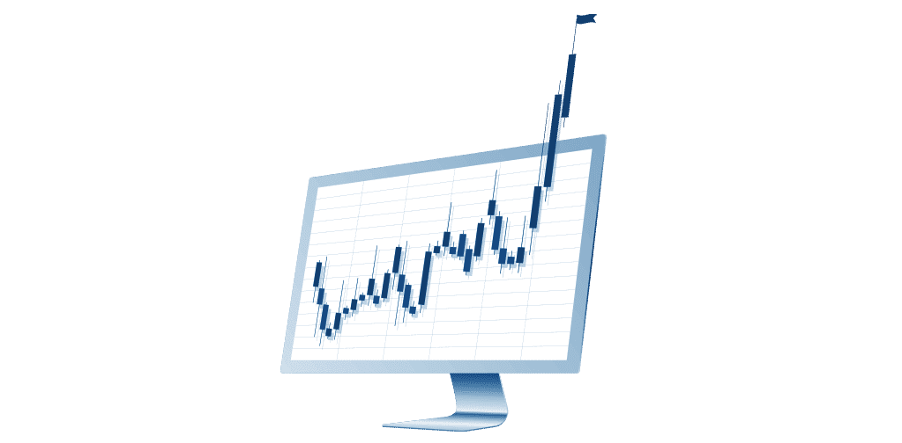
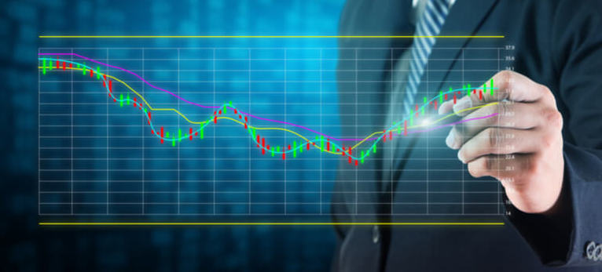

El scalping trading es un estilo de trading que se caracteriza por tomar posiciones de trading a corto plazo, generalmente durante un mismo día, con el objetivo de obtener ganancias pequeñas en el precio de los activos. El scalping trading se caracteriza por su alto grado de especulación, ya que el trader opera con una alta frecuencia y hace uso de un apalancamiento para obtener ganancias en operaciones de menor tamaño. El scalping trading es una forma de trading a corto plazo que se caracteriza por tomar posiciones rápidas y de corta duración. Normalmente la gente que utiliza este tipo de metodo, mira el gráfico en una temporalidad pequeña, entre 1 minuto y los 15 minutos.
El day trading es un estilo de trading en el que los operadores abren y cierran posiciones durante un mismo día de trading. Esta estrategia se utiliza para obtener ganancias a corto plazo, ya sea mediante el uso de órdenes de apertura y cierre o mediante el uso de apalancamiento para obtener ganancias en operaciones de menor tamaño. El day trading se utiliza principalmente en los mercados de divisas, acciones, materias primas y criptomonedas. El estilo de trading requiere un alto grado de disciplina y conocimientos, ya que los operadores deben abrir y cerrar posiciones de manera rápida y estar al tanto de las tendencias del mercado. Las personas que utilizan este tipo de trading, lo miran en temporalidad de 15 minutos hasta 1 hora.
El Swing Trading es un estilo de trading en el que los operadores mantienen posiciones durante un periodo de tiempo más largo, entre uno y varios días. Esta estrategia se utiliza para obtener ganancias a mediano plazo, al igual que el daytrading, pero con un enfoque un poco más a largo plazo. El swing trading se caracteriza por su alto grado de especulación, ya que los traders deben estar al tanto de la tendencia del mercado para abrir y cerrar posiciones de manera eficaz. El swing trading es una forma de trading a medio plazo en el que los operadores buscan obtener ganancias a partir de las fluctuaciones a corto plazo en los precios. Los traders que operan con este metodo, utilizan el grafico en temporalidades de 4 horas, hasta 1 dia.
El trading posicional es un estilo de trading en el que los operadores mantienen posiciones durante un periodo de tiempo más largo, generalmente varias semanas o incluso meses. Esta estrategia se utiliza para obtener ganancias a largo plazo, al igual que el swing trading, pero con un enfoque aún más a largo plazo. El trading posicional se caracteriza por su alto grado de especulación, ya que los traders deben estar al tanto de la tendencia del mercado a largo plazo para abrir y cerrar posiciones de manera eficaz. El trading posicional es una forma de trading a largo plazo en el que los operadores buscan obtener ganancias a partir de las fluctuaciones a largo plazo en los precios. Los que utilizan este tipo, sulen mirar los gráfico en los intervalos de 1 día, de 1 semana, hasta de 1 mes.